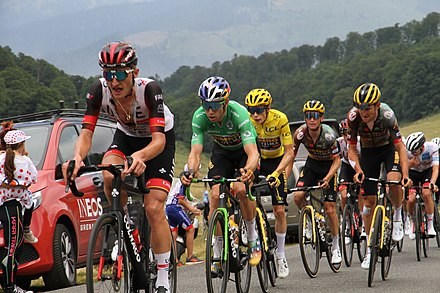

Cycling, also, when on a two-wheeled bicycle, called bicycling or biking, is the use of cycles for transport, recreation, exercise or sport.[1] People engaged in cycling are referred to as "cyclists",[2] "bicyclists",[3] or "bikers".[4] Apart from two-wheeled bicycles, "cycling" also includes the riding of unicycles, tricycles, quadricycles, recumbent and similar human-powered vehicles (HPVs).
 Go back